청소년상담사-3급(2교시) (2019-10-05 기출문제)
1과목: 학습이론
1. 레퍼와 호델(Lepper & Hodell)의 관점에서, 최교사가 학생들에게 유발하고자 한 내재적 동기 요소는?
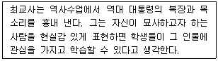
- 도전
- 자율성
- 통제
- 상상
- 숙달
(정답률: 88%)

2. 몰입(flow)에 관한 설명으로 옳지 않은 것은?
- 활동의 도전정도와 개인의 역량 사이의 균형 상태를 나타낸다.
- 보상을 기대하기보다는 경험 그 자체를 추구한다.
- 도전정도가 자신이 지각하는 기술수준을 초과하면 불안해진다.
- 자신이 지각하는 기술수준이 도전정도를 초과하면 지루함을 느낀다.
- 개인 간의 과정이며 개방된 체계의 목표를 반영한다.
(정답률: 62%)
3. 드웩(C. Dweck)이 제시한 지능에 대한 실체적 견해(entity view of intelligence)를 가진 학생들의 특징이 아닌 것은?
- 피상적인 학습전략을 선호한다.
- 자기 보호적 전략을 사용한다.
- 자신이 어떻게 평가되는지가 주된 관심사이다.
- 지능이 안정적이며 통제 가능한 특성이라 본다.
- 위험과 도전을 회피하고 목표도달에 실패하면 쉽게 포기하는 경향이 있다.
(정답률: 66%)
4. 라이언과 데시(Ryan & Deci)가 설명한 자기결정성 정도에 따른 자기조절 유형 수준을 낮은 것에서 높은 순으로 바르게 나열한 것은?
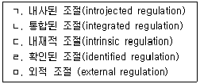
- ㄷ - ㄴ - ㄹ - ㄱ - ㅁ
- ㄷ - ㄹ - ㄱ - ㄴ - ㅁ
- ㅁ - ㄱ - ㄹ - ㄴ - ㄷ
- ㅁ - ㄷ - ㄹ - ㄴ - ㄱ
- ㅁ - ㄹ - ㄱ - ㄴ - ㄷ
(정답률: 60%)
5. 톨만(E. Tolman)의 잠재적 학습(latent learning)과 관련된 설명으로 옳지 않은 것은?
- 학습은 보상이나 추동 감소 없이 발생할 수 있다.
- 보상은 수행과정보다 학습과정에 영향을 미친다.
- 목표를 달성하기 위해 필요한 행동에 대한 기대를 포함하는 인지지도(cognitive map)를 형성한다.
- 자극-반응 연합의 한계를 극복하고자 하였다.
- 목표를 강조하는 목적적 행동주의(purposive behaviorism)에 적합한 예이다.
(정답률: 48%)
6. 강화계획과 관련된 설명으로 옳지 않은 것은?
- 간격계획은 강화시간간격에 기초하고, 비율계획은 반응비율에 기초한다.
- 카지노의 슬롯머신은 변동비율 강화의 예이다.
- 고정간격계획은 강화 직후 반응이 감소했다가 다음 강화시점이 가까울수록 반응이 증가하는 패턴을 보인다.
- 비율계획보다 간격계획에서 더 높은 비율의 반응이 나타난다.
- 간헐적 강화는 연속적 강화에 비해 소거에 대한 저항이 크다.
(정답률: 70%)
7. 고전적 조건형성과 관련 없는 것은?
- 자극일반화(stimulus generalization)
- 체계적 둔감화(systematic desensitization)
- 자발적 회복(spontaneous recovery)
- 조형(shaping)
- 소거(extinction)
(정답률: 61%)
8. 헵(D. Hebb)의 이론에 관한 설명으로 옳은 것은?
- 아동기의 경험보다는 성인기의 경험을 중요시했다.
- 세포 집합체는 역동적 뉴런체계로서, 유전적 영향보다는 경험적 영향을 더 많이 받는다.
- 자극 패턴은 반응과 처음 결합되는 순간 완전한 연합 강도를 획득한다.
- 너무 높지도 너무 낮지도 않은 각성수준은 모든 과제수행을 방해한다.
- 감각박탈은 적절한 신경생리학적 발달을 촉진한다.
(정답률: 61%)
9. 다음에서 설명하는 장(Field)이론의 주요 개념은?
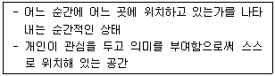
- 위상(topology)
- 벡터(vector)
- 표상(representation)
- 패턴(pattern)
- 차원(dimension)
(정답률: 50%)
10. 다음 각 사례들에 해당하는 정보처리이론을 보기에서 바르게 골라 짝지은 것은?
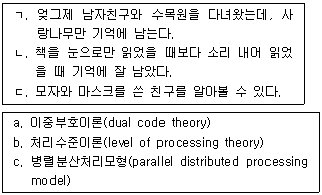
- ㄱ – a, ㄴ – b, ㄷ - c
- ㄱ – a, ㄴ – c, ㄷ - b
- ㄱ – b, ㄴ – a, ㄷ - c
- ㄱ – b, ㄴ – c, ㄷ - a
- ㄱ – c, ㄴ – b, ㄷ - a
(정답률: 65%)
11. 보기와 같이 선형이 연결되지 않은 불완전한 도형을 완성된 형태로 지각하는 원리는?
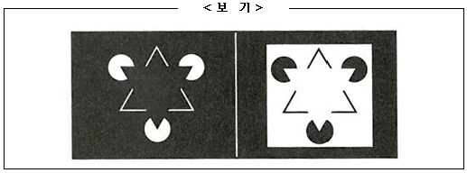
- 유사성(similarity)
- 폐쇄성(closure)
- 대칭성(symmetry)
- 연속성(continuation)
- 근접성(proximity)
(정답률: 68%)
12. 다음에서 설명하는 것은?
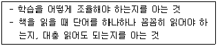
- 선언 지식(declarative knowledge)
- 절차 지식(procedural knowledge)
- 조건 지식(conditional knowledge)
- 일화 기억(episodic memory)
- 의미 기억(semantic memory)
(정답률: 61%)
13. 인지주의 학습이론에 관한 설명으로 옳지 않은 것은?
- 경험의 결과보다 정신적 과정을 중시한다.
- 객관적 입장보다 주관적 입장을 강조한다.
- 전체는 부분의 합 이상이다.
- 몰 단위(molar)행동보다 분자 단위(molecular)행동에 더 많은 관심을 갖는다.
- 시행착오적 문제해결보다 통찰적 문제해결을 강조한다.
(정답률: 56%)
14. 마이켄바움과 굿맨(Meichenbaum & Goodman)의 자기조절행동 단계를 낮은 것에서 높은 순으로 바르게 나열한 것은?
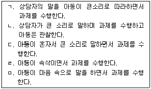
- ㄱ - ㄴ - ㄷ - ㄹ - ㅁ
- ㄱ - ㄴ - ㅁ - ㄹ - ㄷ
- ㄴ - ㄱ - ㄷ - ㄹ - ㅁ
- ㄴ - ㄱ - ㅁ - ㄹ - ㄷ
- ㅁ - ㄹ - ㄷ - ㄱ - ㄴ
(정답률: 85%)
15. 정보처리과정에 관한 설명으로 옳은 것은?
- 이중부호이론에서 정보는 언어부호와 의미부호로 약호화되어 저장된다.
- 감각수용기관을 통해 정보를 최초로 저장하는 곳은 단기기억이다.
- 심상은 어떤 정보를 반복적으로 연습하는 것으로 정보 유지의 기본적인 방법이다.
- 청킹(chunking)은 감각기억에서 시작된다.
- 새로운 정보를 기존의 지식과 연결하여 의미를 부여하는 것을 정교화(elaboration)라 한다.
(정답률: 56%)
16. 망각 중 순행간섭의 사례로 옳은 것은?
- 집 주소가 바뀌면 예전 집 주소가 생각이 안 난다.
- 친구가 이름을 개명했는데 예전 이름으로 부를 때가 있다.
- 소꿉친구를 20년 만에 만났더니 이름이 생각나지 않았다.
- 교통사고로 인해 3년 전 기억이 사라졌다.
- 통장의 비밀번호를 오랫동안 사용하지 않아서 잊어버렸다.
(정답률: 64%)
17. 볼스(R. Bolles)의 진화심리학적 학습이론과 관련하여 다음에서 설명하는 것은?
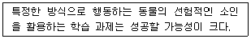
- 굴절 적응(exaptation)
- 적소 논증(niche argument)
- 본능 표류(instinctive drift)
- 등위성(equipotentiality)
- 포괄적 적합성(inclusive fitness)
(정답률: 55%)
18. 뇌의 편재화(lateralization)에 관한 설명으로 옳지 않은 것은?
- 편재화 정도에 대한 신경과학자들의 의견은 일치하지 않는다.
- 스페리(R. Sperry)는 양쪽 반구가 독립된 뇌인 것처럼 활동한다고 주장하였다.
- 레비(J. Levy)는 우반구가 정보를 분석적, 순차적으로 처리하는데 비해 좌반구는 전체적으로 처리함을 발견하였다.
- 우반구의 손상은 신체 왼쪽의 움직임에 영향을 주는 반면에 좌반구의 손상은 오른쪽에 영향을 주게 된다.
- 병렬적 분산처리 관점에 의하면 지식은 특정한 위치에 부호화되는 것이 아니라 여러 기억 네트워크에 걸쳐 부호화된다.
(정답률: 69%)
19. 학습에 영향을 주는 요소에 관한 설명으로 옳지 않은 것은?
- 교수법보다 지능이 학업 성취에 더 큰 영향을 미치는 것으로 알려져 있다.
- 블룸(B. Bloom)에 의하면 학문적 자아개념과 학업성적 간에는 유의미한 관련성이 있다.
- 로젠탈과 제이콥슨(Rosenthal & Jacobson)에 의하면 학생들의 성취도는 교사의 기대에 영향을 받는다.
- 게젤스와 잭슨(Getzels & Jackson)에 의하면 학업 성취는 지능뿐만 아니라 창의력에 의해서도 좌우된다.
- 반두라(A. Bandura)는 자기효능감을 학습자가 과제수행에 필요한 행위를 효율적으로 조직하고 실행해 나가는 능력이라고 정의하였다.
(정답률: 46%)
20. 전이(transfer)와 관련된 내용으로 옳은 것을 모두 고른 것은?
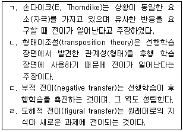
- ㄱ, ㄴ
- ㄱ, ㄹ
- ㄴ, ㄷ
- ㄴ, ㄹ
- ㄷ, ㄹ
(정답률: 53%)
21. 다음에서 설명하는 것은?
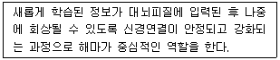
- 공고화(consolidation)
- 가소성(plasticity)
- 국면계열(phase sequence)
- 뉴런생성(neurogenesis)
- 시냅스(synapse)
(정답률: 55%)
22. 조작적 조건형성과 관련된 설명으로 옳지 않은 것을 모두 고른 것은?
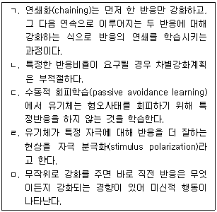
- ㄱ, ㄴ
- ㄱ, ㄷ
- ㄴ, ㄹ
- ㄷ, ㅁ
- ㄹ, ㅁ
(정답률: 40%)
23. 학습과 발달의 관련성에 관한 비고츠키(L. Vygotsky)와 피아제(J. Piaget)의 주장으로 옳은 것은?
- 비고츠키는 학습을 준비가 될 때까지 기다릴 필요가 없는 능동적 과정으로 보았다.
- 피아제는 학습을 지식의 능동적 구성으로, 발달을 연합의 수동적 형성으로 정의하였다.
- 비고츠키에 의하면 발달은 학습의 도구에 불과하다.
- 비고츠키는 동화와 조절이라는 과정 속에서 인지발달이 일어난다고 보았다.
- 피아제는 근접발달대(ZPD)라는 개념으로 학습을 통한 발달의 극대화를 가정하였다.
(정답률: 45%)
24. 자기결정성 이론의 기본 가정에 관한 설명으로 옳지 않은 것은?
- 사람들은 행동의 주체가 자신이라고 느끼기를 원한다.
- 스스로 목표를 세우고 행동하는 조절자라고 믿는다.
- 자기에게 중요하고 가치 있는 것이 무엇인지 결정할 수 있는 자유를 원한다.
- 사람들은 타인과 연결되어 있다고 느끼기를 원한다.
- 스스로 다른 사람에게 의존할 것을 선택하는 것은 타율적인 행동이다.
(정답률: 70%)
25. 와이너(B. Weiner)의 귀인이론으로 옳지 않은 것은?
- 소재차원은 자기존중감과 관련이 있다.
- 안정성 차원은 성공에 대한 주관적 기대와 관련이 있다.
- 외적원인 중 과제난이도는 불안정적 요인으로 보았다.
- 통제가능성은 분노, 감사와 같은 정서반응에 영향을 준다.
- 실패를 안정적이며 통제 불가능한 요인에 귀인하면 우울과 무기력에 빠진다.
(정답률: 50%)
2과목: 청소년 이해론
26. 유해매체물, 유해약물, 유해업소 등의 유해환경을 규제하여 청소년이 건전한 인격체로 성장하게 함이 목적인 법령은?
- 청소년 기본법
- 청소년복지 지원법
- 아동ㆍ청소년의 성보호에 관한 법률
- 청소년활동 진흥법
- 청소년 보호법
(정답률: 60%)
27. 청소년기 정서적 특징으로 옳지 않은 것은?
- 격렬하고 쉽게 동요한다.
- 자의식 증가와 관련이 깊다.
- 보존개념 획득과 관련이 깊다.
- 아동기에 비해 정조(sentiment)가 발달한다.
- 부모와 심리적 이유(psychological weaning)를 원한다.
(정답률: 43%)
28. 청소년기 방어기제 중 성적 충동과 같은 본능적 욕구와 연결된 활동에 참여하는 것을 거절하는 자기부정행위는?
- 주지화(intellectualization)
- 금욕주의(asceticism)
- 철회(withdrawal)
- 부정(denial)
- 억압(repression)
(정답률: 48%)
29. 청소년기 동조성(conformity)의 특징과 거리가 먼 것은?
- 아동기보다 동년배 압력에 더 민감하게 반응한다.
- 자율성이 증가하면 동조성이 증가한다.
- 동년배와의 우정이 주요 의사결정요인이 된다.
- 부모와의 정서적 독립이 영향을 준다.
- 동년배 집단에 대한 동조성은 일반적으로 청소년 초기에 비해 후기에 약화된다.
(정답률: 38%)
30. 청소년 보호법상 ( )에 들어갈 내용이 순서대로 바르게 나열된 것은?
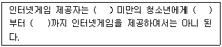
- 15세, 오후 11시, 다음날 오전 6시
- 15세, 오전 0시, 오전 7시
- 16세, 오전 0시, 오전 6시
- 16세, 오후 11시, 다음날 오전 7시
- 17세, 오전 0시, 오전 6시
(정답률: 24%)
31. 다음의 학자와 보기의 내용이 바르게 연결된 것은?
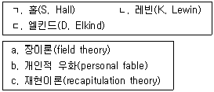
- ㄱ-c, ㄴ-a
- ㄱ-c, ㄴ-b
- ㄱ-a, ㄷ-b
- ㄴ-a, ㄷ-c
- ㄴ-c, ㄷ-b
(정답률: 27%)
32. 에릭슨(E. Erikson)의 청소년기 자아정체감에 관한 설명으로 옳지 않은 것은?
- 자기정의(self-definition)와 관련된다.
- 청소년기의 가장 중요한 발달과업이다.
- 위기(crisis)와 보호(protection) 두 개의 요소로 구성된다.
- 정체감 혼미에 빠지면 건강한 성인으로 성장하기 어렵다.
- 심리적 유예기(moratorium) 동안 다양한 역할을 실험한다.
(정답률: 48%)
33. 청소년복지 지원법에 따르면 여성가족부장관은 청소년복지정책수립을 위해 청소년의 의식ㆍ태도ㆍ생활 등에 관한 실태조사를 몇 년마다 실시해야 하는가?
- 1년
- 2년
- 3년
- 4년
- 5년
(정답률: 30%)
34. 부르디외(P. Bourdieu)의 소비문화이론 내용으로 옳은 것은?
- '취향'에 따른 일상생활의 소비를 통해 계급 정체성이 유지되고 인지된다.
- 소비는 즐거움에 대한 열망과 체험의 순환경험을 제공한다.
- 소비욕구는 광고나 판매전략에 의해 인위적으로 창출, 조작되는 것이다.
- 소비는 '물건에 부여된 기호'를 소비하는 것이다.
- 소비문화는 '생산영역의 매커니즘'에 의해 형성된다.
(정답률: 27%)
35. 지역사회 청소년통합지원체계에 관한 설명으로 옳지 않은 것은?
- 국가는 지역사회 청소년통합지원체계의 구축ㆍ운영을 지원하여야 한다.
- 지방자치단체는 필수연계기관 간의 상호연계ㆍ협력 촉진을 위한 조치를 추진하여야 한다.
- 지역사회 청소년통합지원체계에 포함된 기관의 장은 지원이 필요한 학교 밖 청소년을 발견한 경우 지체 없이 학교 밖 청소년 지원센터에 연계하여야 한다.
- 지역사회 청소년통합지원체계 운영위원회는 위기청소년의 발견 및 보호와 관련된 조례ㆍ규칙의 제ㆍ개정 제안에 관한 사항을 심의한다.
- 지방고용노동청 및 지청은 필수적으로 연계하여야 하는 기관에 포함되지 않는다.
(정답률: 45%)
36. 특정 지역이나 집단의 지배문화가 다른 지역 혹은 집단에게 급속하게 전파되는 현상은?
- 문화지체(cultural lag)
- 문화변용(cultural acculturation)
- 문화전계(cultural transmission)
- 문화결핍(cultural deprivation)
- 문화이식(cultural transplantation)
(정답률: 39%)
37. 청소년증에 관한 설명으로 옳은 것을 모두 고른 것은?
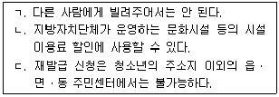
- ㄱ
- ㄱ, ㄴ
- ㄱ, ㄷ
- ㄴ, ㄷ
- ㄱ, ㄴ, ㄷ
(정답률: 42%)
38. 위기청소년 특별지원에 관한 내용으로 옳은 것은?
- 법률상담 및 소송비용 등 금전형태 지원은 할 수 없다.
- 지원 기간은 5년 이내로 하되, 필요한 경우 그 기간을 연장할 수 있다.
- 특별자치시장ㆍ특별자치도지사 또는 시장ㆍ군수ㆍ구청장이 위기청소년 특별지원 여부를 결정하였을 때에는 그 내용을 청소년 본인, 보호자 및 신청인에게 서면으로 통보하여야 한다.
- 지방자치단체 청소년 업무담당 공무원은 위기청소년을 지원 대상 청소년으로 선정받기 위한 신청을 할 수 없다.
- 위기청소년 보호자가 지원 대상 청소년으로 선정하여 줄 것을 신청할 경우 해당 청소년의 동의를 받을 필요는 없다.
(정답률: 37%)
39. 콜즈(B. Coles)가 분류한 청소년권리 영역에 해당하지 않는 것은?
- 천부권(entitlements rights)
- 보호권(protection rights)
- 복지권(welfare rights)
- 권능부여권(enabling rights)
- 의사표명권(representation rights)
(정답률: 26%)
40. 대중매체(mass media)의 특징으로 옳은 것을 모두 고른 것은?
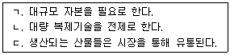
- ㄱ
- ㄱ, ㄴ
- ㄱ, ㄷ
- ㄴ, ㄷ
- ㄱ, ㄴ, ㄷ
(정답률: 36%)
41. 청소년 기본법상 청소년특별회의는 몇 년마다 개최되는가?
- 1년
- 2년
- 3년
- 4년
- 5년
(정답률: 25%)
42. 다음과 같은 현상을 나타내는 개념은?
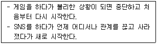
- 루키즘(lookism)
- 오타쿠문화
- 팬덤(fandom) 문화
- 리셋신드롬(reset syndrome)
- 디지털원주민(digital native)
(정답률: 59%)
43. 헐록(E. Hurlock)의 이성애 발달단계 순서로 맞는 것은?
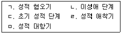
- ㄱ→ㅁ→ㄷ→ㄹ→ㄴ
- ㄷ→ㄱ→ㅁ→ㄹ→ㄴ
- ㄷ→ㅁ→ㄱ→ㄹ→ㄴ
- ㄷ→ㄹ→ㅁ →ㄱ→ㄴ
- ㄹ→ㄷ→ㅁ→ㄱ→ㄴ
(정답률: 20%)
44. 수퍼(D. Super)의 진로발달이론에 관한 설명으로 옳은 것은?
- 진로발달은 아동기부터 성인초기까지로 국한된다.
- 유지기(maintenance stage)에는 직업세계에서의 확고한 위치가 확립되고 이를 유지하려고 노력한다.
- 안정기(stabilization stage)에는 토론, 경험 등을 통해 직업을 탐색한다.
- 성장기(growth stage)는 잠정기, 전환기, 시행기로 나뉜다.
- 확립기(establishment stage)에는 정신적ㆍ육체적으로 기능이 쇠퇴함에 따라 다른 활동을 찾게 된다.
(정답률: 43%)
45. 다음에 제시된 민수의 반응에 해당하는 콜버그(L. Kohlberg)의 도덕성 발달단계는?
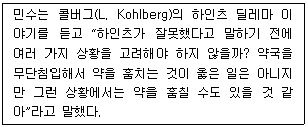
- 처벌과 복종(punishment and obedience)의 단계
- 착한 소녀ㆍ소년(good girl-boy)의 단계
- 법과 질서(law and order)의 단계
- 사회적 계약(social contract)의 단계
- 도구적 쾌락주의(instrumental hedonism)의 단계
(정답률: 42%)
46. 비고츠키(L. Vygotsky)의 사회문화적 인지이론에 관한 설명으로 옳은 것을 모두 고른 것은?
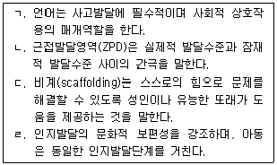
- ㄱ, ㄷ
- ㄱ, ㄴ, ㄷ
- ㄱ, ㄴ, ㄹ
- ㄴ, ㄷ, ㄹ
- ㄱ, ㄴ, ㄷ, ㄹ
(정답률: 42%)
47. 브론펜브레너(U. Bronfenbrenner)의 생태학적 이론에 관한 설명으로 옳지 않은 것은?
- 거시체계는 개인이 현재 살고 있는 문화적 환경을 의미한다.
- 청소년은 미시체계와 서로 상호작용하며 이는 발달에 영향을 미친다.
- 중간체계는 미시체계들 간의 관계성 또는 맥락 간의 연결을 말한다.
- 시간체계에 따르면 어떤 사건의 효과는 시간적 경과에 따라 변화될 수 있다.
- 외체계는 이웃, 학교, 교사와 같이 청소년을 둘러싸고 있는 경험적 환경이다.
(정답률: 40%)
48. 청소년 비행이론 중 중화이론(neutralization theory)에 관한 설명으로 옳은 것을 모두 고른 것은?
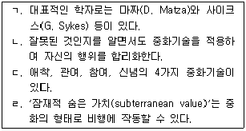
- ㄱ, ㄴ
- ㄴ, ㄹ
- ㄱ, ㄴ, ㄹ
- ㄱ, ㄷ, ㄹ
- ㄱ, ㄴ, ㄷ, ㄹ
(정답률: 24%)
49. 청소년기의 생물학적 발달에 관한 설명으로 옳지 않은 것은?
- 성장급등 현상이 일어난다.
- 에스트로겐은 유방의 발달이나 음모의 성장 등을 자극한다.
- 프로게스테론은 자궁이 임신을 준비하게 하고, 임신을 유지하게 해준다.
- 에스트라디올은 남자청소년의 성적 발달을 주도한다.
- 뇌하수체는 시상하부에 의해 통제된다.
(정답률: 40%)
50. 청소년 자살에 관한 설명으로 옳은 것을 모두 고른 것은?
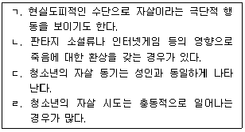
- ㄱ, ㄴ
- ㄴ, ㄹ
- ㄱ, ㄴ, ㄹ
- ㄱ, ㄷ, ㄹ
- ㄱ, ㄴ, ㄷ, ㄹ
(정답률: 48%)
3과목: 청소년 수련 활동론
51. 제6차 청소년정책기본계획 정책목표 중 '청소년 주도 활동 활성화'의 중점과제를 모두 고른 것은?
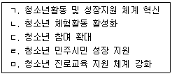
- ㄱ, ㄴ, ㅁ
- ㄱ, ㄷ, ㄹ
- ㄷ, ㄹ, ㅁ
- ㄴ, ㄷ, ㄹ, ㅁ
- ㄱ, ㄴ, ㄷ, ㄹ, ㅁ
(정답률: 14%)
52. 청소년 프로그램 마케팅의 4P 모델에 해당하지 않는 것은?
- 프로그램 내용(Product)
- 프로그램 참가비(Price)
- 프로그램 장소(Place)
- 프로그램 자부심(Pride)
- 프로그램 홍보(Promotion)
(정답률: 23%)
53. 청소년프로그램 기획의 성격이 아닌 것은?
- 미래지향성
- 연계성
- 연속성
- 목적성
- 고착성
(정답률: 32%)
54. 다음이 설명하는 청소년프로그램 평가모형은?
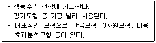
- 목표중심 평가모형
- 의사결정중심 평가모형
- 판단중심 평가모형
- 전문성중심 평가모형
- 참여-반응중심 평가모형
(정답률: 19%)
55. 다음이 설명하는 청소년지도방법 이론은?
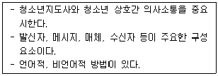
- 경험학습이론
- 구성주의이론
- 프로그램이론
- 동기이론
- 커뮤니케이션이론
(정답률: 32%)
56. 청소년 기본법령상 청소년지도자 자격검정 응시기준에 관한 설명으로 옳은 것은?
- 1급 청소년지도사는 2급 청소년지도사 자격 취득 후 청소년활동 등 청소년육성업무 종사경력이 2년 이상이면 응시할 수 있다.
- 1급 청소년상담사는 석사학위 학위를 취득한 후 상담 실무경력이 3년 이상이면 응시할 수 있다.
- 2급 청소년상담사는 3급 청소년상담사로서 상담 실무경력이 1년 이상이면 응시할 수 있다.
- 3급 청소년상담사는 고등학교 졸업 후 상담 실무경력이 5년 이상이면 응시할 수 있다.
- 2급 청소년지도사는 3급 청소년지도사 자격 취득 후 청소년활동 등 청소년육성업무 종사경력이 1년 이상이면 응시할 수 있다.
(정답률: 17%)
57. 청소년지도방법의 심성계발 원리에 해당하는 것을 모두 고른 것은?
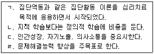
- ㄱ
- ㄴ, ㄹ
- ㄱ, ㄴ, ㄷ
- ㄴ, ㄷ, ㄹ
- ㄱ, ㄴ, ㄷ, ㄹ
(정답률: 32%)
58. 다음이 설명하는 청소년프로그램 개발 패러다임은?
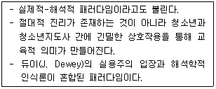
- 실증주의
- 논리실증주의
- 구성주의
- 비판주의
- 합리주의
(정답률: 17%)
59. 청소년자원봉사활동의 특성으로 적합하지 않은 것은?
- 자발성
- 공익성
- 무보상성
- 의존성
- 계속성
(정답률: 25%)
60. 청소년지도방법의 문제해결원리 중 과학적 체계 7단계의 순서로 옳은 것은?
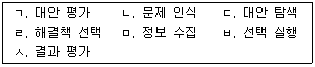
- ㄴ→ㄷ→ㅁ→ㄱ→ㄹ→ㅂ→ㅅ
- ㄴ→ㅁ→ㄷ→ㄹ→ㄱ→ㅂ→ㅅ
- ㄴ→ㅁ→ㄹ→ㄷ→ㄱ→ㅅ→ㅂ
- ㅁ→ㄴ→ㄷ→ㄱ→ㄹ→ㅂ→ㅅ
- ㅁ→ㄷ→ㄴ→ㄹ→ㄱ→ㅅ→ㅂ
(정답률: 9%)
61. 유사한 관심사를 가진 청소년들이 자기개발, 진로탐색 등을 위해 자율적으로 참여하여 조직하고 운영하는 형태의 청소년활동은?
- 청소년멘토링
- 청소년교류활동
- 오리엔티어링
- 청소년동아리활동
- 방과후학교활동
(정답률: 22%)
62. 청소년의 달을 맞이하여 개최되는 국내 최대 규모의 범 청소년 축제는?
- 청소년문화존
- 대한민국청소년박람회
- 청소년푸른성장대상
- 미래교육박람회
- 너나들이축제
(정답률: 34%)
63. 청소년활동 진흥법상 청소년 수련시설 설치ㆍ운영자에게 금지된 행위를 모두 고른 것은?
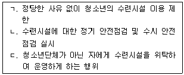
- ㄱ
- ㄱ, ㄴ
- ㄱ, ㄷ
- ㄴ, ㄷ
- ㄱ, ㄴ, ㄷ
(정답률: 30%)
64. 다음은 청소년 기본법상 청소년단체에 대한 정의이다. ( )에 들어갈 용어로 옳은 것은?
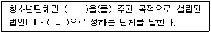
- ㄱ: 청소년육성, ㄴ: 여성가족부령
- ㄱ: 청소년육성, ㄴ: 대통령령
- ㄱ: 청소년참여, ㄴ: 여성가족부령
- ㄱ: 청소년참여, ㄴ: 대통령령
- ㄱ: 청소년보호, ㄴ: 여성가족부령
(정답률: 19%)
65. 창의적 체험활동 중 자치활동, 적응활동, 행사활동, 창의적 특색활동 등이 포함된 활동영역은?
- 자율활동
- 동아리활동
- 봉사활동
- 진로활동
- 범교과활동
(정답률: 26%)
66. 청소년활동 진흥법상 명시된 한국청소년활동진흥원의 사업에 해당되지 않는 것은?
- 청소년육성에 필요한 정보 등의 종합적 관리 및 제공
- 청소년의 자립능력 향상을 위한 자활 및 재활 지원
- 청소년수련활동 인증위원회 등 청소년수련활동 인증제도의 운영
- 국가 및 지방자치단체가 개발한 주요 청소년수련거리의 시범운영
- 숙박형 등 청소년수련활동 계획의 신고 지원에 대한 컨설팅 및 교육
(정답률: 25%)
67. 청소년활동 진흥법령상 청소년수련시설 설치의 개별 기준에 따라 체육활동장을 설치해야 하는 시설은?
- 청소년수련관, 청소년문화의집, 청소년특화시설
- 청소년수련원, 유스호스텔, 청소년야영장
- 청소년문화의집, 청소년수련원, 청소년야영장
- 청소년수련원, 유스호스텔, 청소년특화시설
- 청소년수련관, 청소년수련원, 청소년야영장
(정답률: 24%)
68. 청소년활동 진흥법상 청소년수련활동 인증제의 인증심사원에 관한 설명으로 옳지 않은 것은?
- 인증심사원은 1급 청소년지도사 또는 1급 청소년상담사 자격증 소지자로 한다.
- 청소년활동분야에서 5년 이상의 실무경력이 있는 사람은 인증심사원 선발에 응시할 수 있다.
- 청소년수련활동 인증위원회에서 면접 등 절차를 거쳐 선발한다.
- 인증심사원이 되려는 사람은 청소년수련활동 인증위원회가 실시하는 직무연수를 40시간 이상 받아야 한다.
- 인증심사원은 2년마다 20시간 이상의 직무연수를 이수하여야 한다.
(정답률: 13%)
69. ( )에 순서대로 들어갈 내용은?
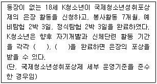
- 6개월, 8개월
- 7개월, 9개월
- 8개월, 10개월
- 9개월, 11개월
- 10개월, 12개월
(정답률: 16%)
70. 다음이 설명하는 기관은?
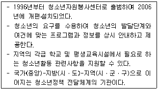
- 한국청소년단체협의회
- 시ㆍ도 청소년상담복지센터
- 한국청소년쉼터협의회
- 지방청소년활동진흥센터
- 한국청소년수련시설협회
(정답률: 19%)
71. 청소년 기본법의 내용 중 ( )에 들어갈 용어로 옳은 것은?
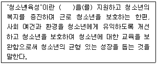
- 청소년활동
- 청소년참여
- 청소년권리
- 청소년문화
- 청소년교류
(정답률: 32%)
72. 다음이 설명하는 것은?
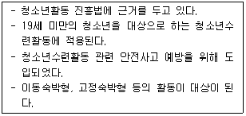
- 청소년수련시설종합평가제
- 청소년수련활동신고제
- 청소년자기도전포상제
- 자유학기제
- 학교 내 청소년단체활동
(정답률: 25%)
73. 청소년 기본법상 청소년활동 지원에 관한 내용으로 옳지 않은 것은?
- 국가 및 지방자치단체의 청소년활동 지원
- 청소년활동과 학교교육ㆍ평생교육을 연계하여 교육적 효과를 높일 수 있는 시책 수립
- 학교의 정규교육으로 보호할 수 없는 시간 동안 다양한 교육 및 활동 프로그램을 제공할 수 있는 방안 마련
- 청소년육성기금의 사용
- 청소년이 수송ㆍ문화ㆍ여가ㆍ수련 등의 시설 이용료 면제, 할인을 받을 수 있는 청소년증 발급
(정답률: 10%)
74. 청소년어울림마당에 관한 설명으로 옳지 않은 것은?
- 청소년들이 주체가 되어 기획ㆍ진행될 수 있도록 한다.
- 청소년의 다양한 문화표현의 장으로 운영될 수 있도록 한다.
- 청소년의 접근이 용이하고 다양한 지역사회 자원이 결합된 일정한 공간을 의미한다.
- 청소년의 건전한 여가활동을 증진하기 위한 놀이마당식 체험 공간이다.
- 청소년수련지구와 같은 의미이다.
(정답률: 22%)
75. 청소년자원봉사활동의 준비단계에 해당되지 않는 것은?
- 청소년자원봉사활동이 진행될 현장을 답사한다.
- 청소년들에게 교육적으로 적합한 활동인지 파악한다.
- 청소년자원봉사활동이 어떻게 전개될 것인지 검토한다.
- 청소년 봉사활동의 확인서를 발급한다.
- 필요한 물품목록을 확인한다.
(정답률: 30%)